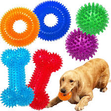
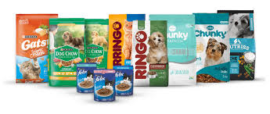

SERVICIOS
TIENDA PARA MASCOTAS
Juguetes para Mascotas
En nuestra tienda encontrarás una gran variedad de juguetes para mantener entretenidas a tus mascotas. Desde pelotas hasta juguetes interactivos.
Concentrados para Mascotas
Ofrecemos una selección de alimentos balanceados y concentrados para perros y gatos, formulados para mantener una dieta saludable y equilibrada.
Medicamentos para Mascotas
Contamos con una amplia gama de medicamentos veterinarios para tratar diversas enfermedades y condiciones de salud en tus mascotas. Consulta a nuestros veterinarios para obtener la mejor recomendación.